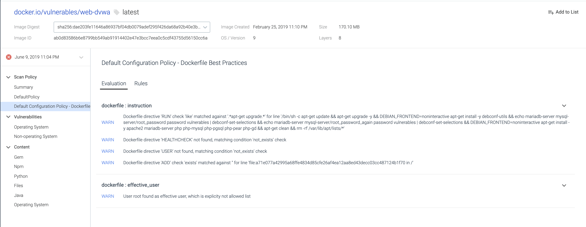

Scan Result Details
When you drill down into the Scan Results list, the details menu provides a variety of ways to view vulnerability and policy violation data at a glance.
Policy Summary views
Vulnerabilities summaries
Content summaries
These summaries provide:
An easy-to-parse view of why a specific image failed
Which rules generated the most Warn and Stop actions
Overview of how an image has performed against the various audit policies that have been put in place
Ability to filter for high-severity CVEs, and see which have an available fix
You can also download the Policy Summary to PDF and the Vulnerabilities Summary to a CSV file.
Policy Results Views
Summary
The landing page of a Scan Results detail is the Policy Summary view.
You can:
Get a birds-eye view of scanning status
Select a different scan date
Drill down to a detail page
Click Download as PDF to get a full report, including all underlying CVEs.
 |
Select Dates for Past Scans
From the dropdown, select the date of the scan you'd like to analyze.
Review Scanning Policy Details
Select a listed Policy to see details about the STOP and WARN actions triggered in the Evaluation,
as well as the underlying Rules affected.
|  |
Review Vulnerability Summaries
Select either Operating System-related or Non-Operating System-related Vulnerability summaries to review.
 |
You can:
Get a birds-eye-view of vulnerability status
Click a CVE number to get the full details
Search or filter by severity
Click Download CSV to get the vulnerabilities data as a CSV file
Review Content Details
Navigate through node, ruby, python, java, OS packages, and the files in a container to search for details about a particular package or file.
 |